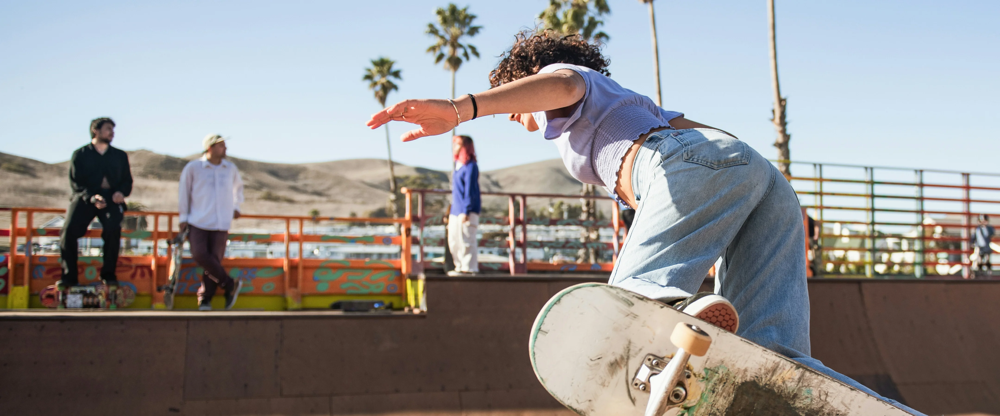

Почитать ещё


7 мин
Как избежать травм при катании
Как катать жёстко, но безопасно. Читай, чтобы избежать травм.

10 мин
мифы о мире скейтбординга
Развеиваем мифы о скейтбординге. Что правда, а что — фигня?

Теория
5 мин
стили катания: street, park, vert, bowl
Какой стиль скейтбординга выбрать? Разбираемся по полочкам.